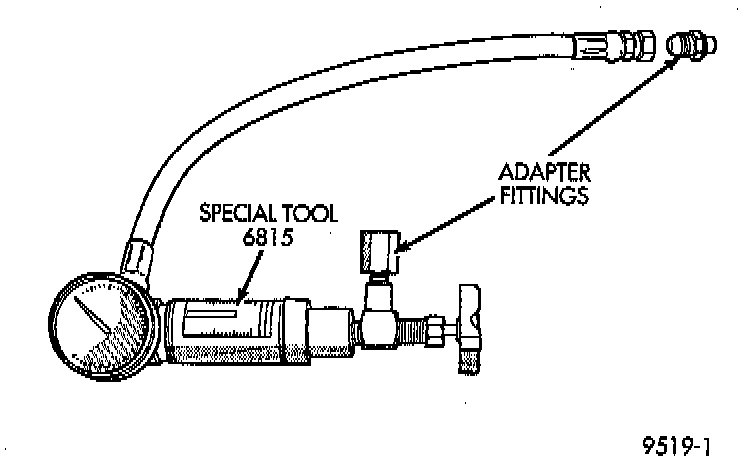

Pump Pressure Test

GENERAL INFORMATION
The following procedure is used to test the operation of the power steering system on the vehicle. This test will provide the flow rate of the power steering pump along with the maximum relief pressure. Perform test any time a power steering system problem is present. This test will determine if the power steering pump or power steering gear is not functioning properly. The following pressure and flow test is performed using Pressure/Flow tester, Special Tool 6815, or equivalent.
TEST
1. Check belt tension and adjust as necessary.
2. Disconnect high pressure hose at gear or pump. Use a container for dripping fluid.
3. Connect pressure gauge from Power Steering Analyzer Tool kit 6815, or equivalent to both hoses using appropriate adapter. Connect spare pressure hose to gear or pump.
4. Open the test valve completely.
5. Start engine and let idle long enough to circulate power steering fluid through flow/pressure test gauge and to get air out of the fluid. Then shut off engine.
6. Check fluid level, add fluid as necessary. Start engine again and let idle.
7. Gauge should read below 862 kPa (125 psi), if above, inspect the hoses for restrictions and repair as necessary. The initial pressure reading should be in the range of 345 - 552 kPa (50 - 80 psi).
CAUTION: The following test procedure involves testing maximum pump pressure output and flow control valve operation. Do not leave valve closed for more than three seconds as the pump could be damaged.
8. Close valve fully three times and record highest pressure indicated each time. All three readings must be above specifications and within 345 kPa (50 psi) of each other.
- Pressures above specifications but not within 345 kPa (50 psi) of each other, replace pump.
- Pressures within 345 kPa (50 psi) of each other but below specifications, replace pump.
CAUTION: Do not force the pump to operate against the stops for more than 2 to 4 seconds at a time because, pump damage will result.
9. Open the test valve, turn steering wheel extreme left and right positions against the stops. Record the highest indicated pressure at each position. Compare readings to specifications. If highest output pressures are not the same against either stop, the gear is leaking internally and must be repaired.